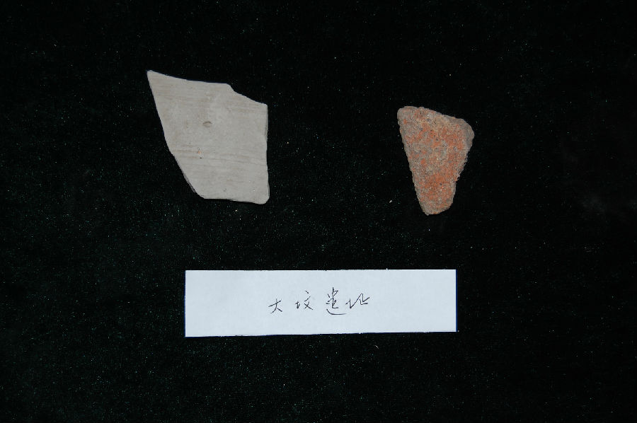

嘉兴市文物保护网 · 市级文物保护点 · 2020-11-09 · 原文

大坟遗址位于嘉兴市南湖区大桥镇江南村6组，西北环河，面积较小，仅447平方米，为新石器良渚文化至春秋战国时期的遗址。1985年调查时在东南高地曾出土镂孔豆，贯耳壶等。文化层较厚，属良渚文化时期。西北高地文化层土色黑灰，厚约40厘米左右，出土较多的印纹陶片。遗址反映了良渚时期至春秋战国时的面貌，延续时间较长，有较高的历史和科学价值。1992年公布为嘉兴市文物保护点。